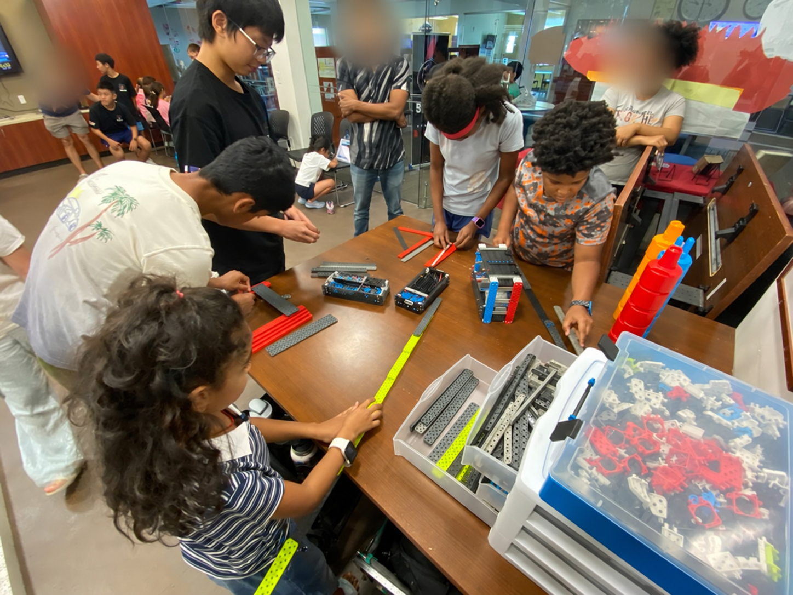

From curiosity to creation
A question today.
A creation tomorrow.
Student robotics, shared discoveries, and hands-on STEM learning for our North Texas community.
For students & families
Find your place on a team.
Build, code, test, document the engineering process, or lead outreach. Every contribution helps the team learn.

Learning goes further when it’s shared
Good ideas grow
when we share them.
Our students bring robotics into North Texas libraries, schools, and community spaces. Through demonstrations, hands-on activities, and mentorship, they help others discover what they can create.
See our community impact →Help the next idea take shape.
Share time, expertise, or resources to support student learning and community STEM programs.